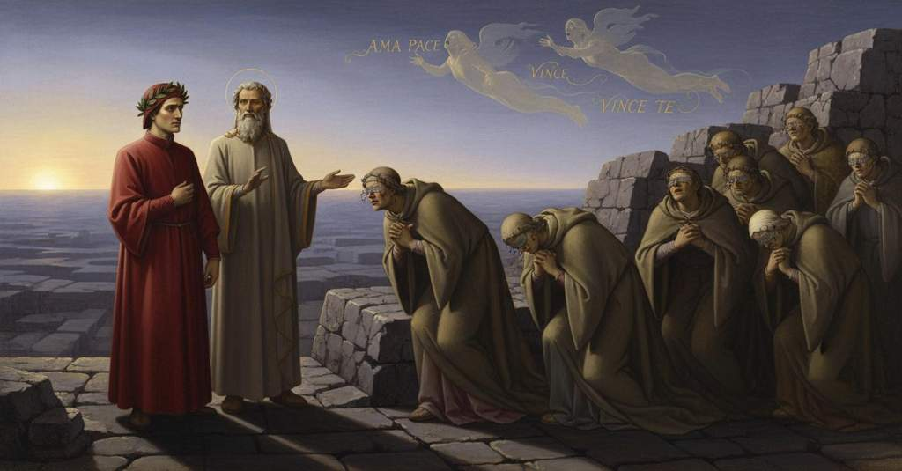

Purgatorio — Canto 13

Nel girone degli invidiosi, Dante incontra le anime con gli occhi cuciti dal fil di ferro e parla con Sapìa da Siena, che racconta la sua gioia per la sconfitta dei suoi concittadini e chiede preghiere per accelerare la sua purificazione. In the circle of the envious, Dante meets the souls with their eyes sewn shut with iron wire and speaks with Sapìa of Siena, who recounts her joy at the defeat of her fellow citizens and asks for prayers to hasten her purification. 嫉妬深い者たちの環で、ダンテは鉄線で目を縫われた魂たちに出会い、同郷人の敗北を喜んだことを語って浄化のための祈りを求めるシエナのサピーアと話す。
1
Noi eravamo al sommo de la scala,
We were at the summit of the stairway,
我らは階段の頂上にいた、
2
dove secondamente si risega
where for a second time is cut back
そこでは二度目にえぐられている
3
lo monte che salendo altrui dismala.
the mountain that in climbing cures one of sin.
登る者を浄めるこの山が。
4
Ivi così una cornice lega
There in the same way a terrace binds
そこでは同じように一つの環道が結び
5
dintorno il poggio, come la primaia;
the hill all around, like the first one;
丘の周りを、最初のもののように、
6
se non che l’arco suo più tosto piega.
except that its arc bends more quickly.
ただしその弧はより速く曲がっている。
7
Ombra non lì è né segno che si paia:
No shade is there nor any carving to be seen:
そこには影もなく、見えるしるしもない。
8
parsi la ripa e parsi la via schietta
the bank appeared bare and the path appeared sheer
崖は見え、まっすぐな道も見え
9
col livido color de la petraia.
with the livid color of the stone.
岩場の鉛色と共に。
10
«Se qui per dimandar gente s’aspetta»,
“If here one waits to ask for people,”
「もしここで人に尋ねるために待つなら」
11
ragionava il poeta, «io temo forse
the poet reasoned, “I fear perhaps
詩人は論じた、「恐らくは
12
che troppo avrà d’indugio nostra eletta».
that our choice will have too much delay.”
我らの選択はあまりに遅れるだろう」。
13
Poi fisamente al sole li occhi porse;
Then he fixed his eyes steadfastly on the sun;
それから彼は太陽にしっかりと目を向け、
14
fece del destro lato a muover centro,
he made his right side the center of his turn,
右側を軸として動き、
15
e la sinistra parte di sé torse.
and swung around the left part of himself.
自身の左側を回した。
16
«O dolce lume a cui fidanza i’ entro
“O sweet light in which I trustingly enter
「おお、甘美な光よ、汝を頼りとして我は入る」
17
per lo novo cammin, tu ne conduci»,
upon the new path, you lead us,”
「この新たな道へ、汝が我らを導きたまえ」
18
dicea, «come condur si vuol quinc’ entro.
he said, “as one needs to be led in here.
彼は言った、「ここを進むべきであるように。
19
Tu scaldi il mondo, tu sovr’ esso luci;
You warm the world, you shine above it;
汝は世界を暖め、その上で輝く。
20
s’altra ragione in contrario non ponta,
if other reason does not point against it,
もし反対の理由が示されぬなら、
21
esser dien sempre li tuoi raggi duci».
your rays must always be our guides.”
常に汝の光が導き手となるべきだ」。
22
Quanto di qua per un migliaio si conta,
As far as is counted here for a mile,
こちらで一マイルと数えられる距離を、
23
tanto di là eravam noi già iti,
so far had we already gone there,
それだけ向こうへ我らはすでに行っていた、
24
con poco tempo, per la voglia pronta;
in little time, because of our ready will;
わずかな時間で、迅速な意志によって。
25
e verso noi volar furon sentiti,
and spirits were heard flying toward us,
そして我らに向かって飛ぶのが聞こえた、
26
non però visti, spiriti parlando
though they were not seen, spirits speaking
しかし見えはせず、霊たちが語りながら
27
a la mensa d’amor cortesi inviti.
courteous invitations to the table of love.
愛の食卓への丁寧な招きを。
28
La prima voce che passò volando
The first voice that passed in flight
飛びながら通り過ぎた最初の声は
29
‘Vinum non habent’ altamente disse,
said loudly, ‘Vinum non habent,’
「ヴィヌム・ノン・ハベント」と高らかに言い、
30
e dietro a noi l’andò reïterando.
and went reiterating it behind us.
我らの後ろでそれを繰り返していった。
31
E prima che del tutto non si udisse
And before it was completely out of hearing
そしてそれが完全に聞こえなくなる前に
32
per allungarsi, un’altra ‘I’ sono Oreste’
from having moved away, another, ‘I am Orestes,’
遠ざかったために、もう一つの声が「我はオレステ」と
33
passò gridando, e anco non s’affisse.
passed by crying, and it also did not stop.
叫びながら通り過ぎ、それもまた留まらなかった。
34
«Oh!», diss’ io, «padre, che voci son queste?».
“Oh!” I said, “father, what voices are these?”
「おお！」と私は言った、「父上、これらの声は何ですか？」。
35
E com’ io domandai, ecco la terza
And as I asked, here came the third,
そして私が尋ねると、見よ、三番目の声が
36
dicendo: ‘Amate da cui male aveste’.
saying: ‘Love those from whom you have had evil.’
言った、「汝らに悪をなした者を愛せよ」。
37
E ’l buon maestro: «Questo cinghio sferza
And the good master: “This circle scourges
そして善き師は言った、「この環道は鞭打つ
38
la colpa de la invidia, e però sono
the fault of envy, and therefore are
嫉妬の罪を。それゆえに
39
tratte d’amor le corde de la ferza.
the cords of the whip drawn from love.
愛から引かれているのだ、鞭の縄は。
40
Lo fren vuol esser del contrario suono;
The bridle must be of the contrary sound;
勒は反対の響きのものでなければならぬ。
41
credo che l’udirai, per mio avviso,
I believe you will hear it, in my opinion,
私の考えでは、汝はそれを聞くだろう、
42
prima che giunghi al passo del perdono.
before you reach the pass of forgiveness.
赦しの門にたどり着く前に。
43
Ma ficca li occhi per l’aere ben fiso,
«But fix your eyes through the air quite intently,
「だが大気の中をよく目を凝らして見よ、
44
e vedrai gente innanzi a noi sedersi,
and you will see people sitting before us,
我らの前に人々が座っているのが見えるだろう、
45
e ciascun è lungo la grotta assiso».
and each one is seated along the bank».
そして各々が岩壁に沿って座っているのだ」。
46
Allora più che prima li occhi apersi;
Then more than before I opened my eyes;
そこで私は以前にも増して目を開いた。
47
guarda’mi innanzi, e vidi ombre con manti
I looked before me, and saw shades with mantles
前方を見ると、亡霊たちが外套をまとっているのが見えたが、
48
al color de la pietra non diversi.
of a color not different from the stone.
その色は石の色と異ならなかった。
49
E poi che fummo un poco più avanti,
And after we were a little further on,
そして我らがもう少し先に進んだ時、
50
udia gridar: ‘Maria, òra per noi’:
I heard them cry: ‘Mary, pray for us’:
私は「マリアよ、我らのために祈りたまえ」と叫ぶのを聞いた。
51
gridar ‘Michele’ e ‘Pietro’ e ‘Tutti santi’.
cry ‘Michael’ and ‘Peter’ and ‘All Saints’.
「ミケーレよ」「ペテロよ」「すべての聖人よ」と叫ぶのを。
52
Non credo che per terra vada ancoi
I do not believe that on earth there goes today
私は思う、今日地上を歩む者で、
53
omo sì duro, che non fosse punto
a man so hard, that he would not be pierced
これほど冷酷な者はおらず、私がその後見たものに
54
per compassion di quel ch’i’ vidi poi;
by compassion for what I saw then;
憐れみで胸を刺されぬ者はいないだろうと。
55
ché, quando fui sì presso di lor giunto,
for, when I had come so near to them,
というのも、私が彼らのすぐそばまで近づき、
56
che li atti loro a me venivan certi,
that their condition came clearly to me,
その姿が私にはっきりとわかるようになった時、
57
per li occhi fui di grave dolor munto.
a heavy grief was wrung from my eyes.
目から重い悲しみを搾り取られたからだ。
58
Di vil ciliccio mi parean coperti,
Of vile hair-cloth they seemed to me covered,
彼らは粗末な毛衣に覆われているように見え、
59
e l’un sofferia l’altro con la spalla,
and one supported the other with his shoulder,
一人はもう一人を肩で支え、
60
e tutti da la ripa eran sofferti.
and all were supported by the bank.
そして全員が岸壁に支えられていた。
61
Così li ciechi a cui la roba falla,
Thus the blind to whom livelihood is lacking,
物乞いをする盲人たちが、
62
stanno a’ perdoni a chieder lor bisogna,
stand at pardons to ask for their need,
免罪を乞うために立って自分たちの窮状を訴え、
63
e l’uno il capo sopra l’altro avvalla,
and one his head upon the other lets fall,
一人がもう一人の上に頭をもたせかけるように、
64
perché ’n altrui pietà tosto si pogna,
so that pity in others may quickly be roused,
それは他人の憐れみをすぐにでも呼び起こすため、
65
non pur per lo sonar de le parole,
not only for the sound of the words,
言葉の響きによってだけでなく、
66
ma per la vista che non meno agogna.
but for the sight that no less entreats.
それに劣らず切に訴えるその姿によっても。
67
E come a li orbi non approda il sole,
And as to the sightless the sun is no help,
そして太陽が盲人たちの役に立たぬように、
68
così a l’ombre quivi, ond’ io parlo ora,
so to the shades here, of whom I now speak,
ここの亡霊たちにも、今私が語っている者たちに、
69
luce del ciel di sé largir non vole;
the light of heaven does not wish to grant itself;
天の光は自らを分け与えようとはしなかった。
70
ché a tutti un fil di ferro i cigli fóra
for an iron wire pierces the eyelids of them all
なぜなら、一本の鉄の針金が皆の瞼を貫き、
71
e cusce sì, come a sparvier selvaggio
and sews them up, as to a wild hawk
そして縫い合わせているからだ、まるで野生の鷹に
72
si fa però che queto non dimora.
is done because it does not stay quiet.
それが落ち着かないという理由で行われるように。
73
A me pareva, andando, fare oltraggio,
It seemed to me, in passing, to do an outrage,
私には、歩きながら、無礼を働いているように思われた、
74
veggendo altrui, non essendo veduto:
seeing others, without being seen:
他人を見ながら、自分は見られていないのだから。
75
per ch’io mi volsi al mio consiglio saggio.
for which I turned to my wise counsel.
そこで私は賢い我が助言者の方を向いた。
76
Ben sapev’ ei che volea dir lo muto;
He well knew what the mute one meant to say;
彼は、無言の者が何を言いたいかよく知っていた。
77
e però non attese mia dimanda,
and therefore did not wait for my request,
それゆえ私の問いを待たずに、
78
ma disse: «Parla, e sie breve e arguto».
but said: «Speak, and be brief and to the point».
こう言った。「話すがよい、短く的を射た言葉で」。
79
Virgilio mi venìa da quella banda
Virgil was coming to me on that side
ウェルギリウスは、環道のうち
80
de la cornice onde cader si puote,
of the terrace from which one can fall,
落ちる可能性のある側から私の方へ来ていた、
81
perché da nulla sponda s’inghirlanda;
because it is wreathed by no bank;
なぜならそちらは何の柵にも囲まれていないので。
82
da l’altra parte m’eran le divote
on the other side were the devout
反対側には敬虔な
83
ombre, che per l’orribile costura
shades, who through the horrible stitching
亡霊たちがおり、その恐ろしい縫い目のために
84
premevan sì, che bagnavan le gote.
pressed so, that they bathed their cheeks.
涙を絞り出し、頬を濡らしていた。
85
Volsimi a loro e: «O gente sicura»,
I turned to them and: «O people assured,»
私は彼らに向き直り、「おお、やがては至高の光を見ることを
86
incominciai, «di veder l’alto lume
I began, «of seeing the high light
約束された人々よ」と、
87
che ’l disio vostro solo ha in sua cura,
that your desire alone has in its care,
話し始めた、「汝らの望みがただそれのみを求める光を、
88
se tosto grazia resolva le schiume
so may grace soon dissolve the scum
願わくは恩寵が汝らの良心の滓を
89
di vostra coscïenza sì che chiaro
of your conscience so that clear
速やかに溶かし、それを通して心の川が
90
per essa scenda de la mente il fiume,
through it may descend the river of the mind,
清らかに流れ下りますように。
91
ditemi, ché mi fia grazioso e caro,
tell me, for it will be gracious and dear to me,
教えてほしい、そうすれば私には有り難く嬉しいことだから、
92
s’anima è qui tra voi che sia latina;
if any soul is here among you that is Italian;
汝らの中にラテンの（イタリアの）魂がいるかどうかを。
93
e forse lei sarà buon s’i’ l’apparo».
and perhaps it will be good for her if I learn of it».
そして私がそのことを知れば、恐らくその魂のためになるだろう」。
94
«O frate mio, ciascuna è cittadina
«O frate mio, ciascuna è cittadina
«O frate mio, ciascuna è cittadina
95
d’una vera città; ma tu vuo’ dire
d’una vera città; ma tu vuo’ dire
d’una vera città; ma tu vuo’ dire
96
che vivesse in Italia peregrina».
che vivesse in Italia peregrina».
che vivesse in Italia peregrina».
97
Questo mi parve per risposta udire
Questo mi parve per risposta udire
Questo mi parve per risposta udire
98
più innanzi alquanto che là dov’ io stava,
più innanzi alquanto che là dov’ io stava,
più innanzi alquanto che là dov’ io stava,
99
ond’ io mi feci ancor più là sentire.
ond’ io mi feci ancor più là sentire.
ond’ io mi feci ancor più là sentire.
100
Tra l’altre vidi un’ombra ch’aspettava
Tra l’altre vidi un’ombra ch’aspettava
Tra l’altre vidi un’ombra ch’aspettava
101
in vista; e se volesse alcun dir ‘Come?’,
in vista; e se volesse alcun dir ‘Come?’,
in vista; e se volesse alcun dir ‘Come?’,
102
lo mento a guisa d’orbo in sù levava.
lo mento a guisa d’orbo in sù levava.
lo mento a guisa d’orbo in sù levava.
103
«Spirto», diss’ io, «che per salir ti dome,
«Spirto», diss’ io, «che per salir ti dome,
«Spirto», diss’ io, «che per salir ti dome,
104
se tu se’ quelli che mi rispondesti,
se tu se’ quelli che mi rispondesti,
se tu se’ quelli che mi rispondesti,
105
fammiti conto o per luogo o per nome».
fammiti conto o per luogo o per nome».
fammiti conto o per luogo o per nome».
106
«Io fui sanese», rispuose, «e con questi
«Io fui sanese», rispuose, «e con questi
«Io fui sanese», rispuose, «e con questi
107
altri rimendo qui la vita ria,
altri rimendo qui la vita ria,
altri rimendo qui la vita ria,
108
lagrimando a colui che sé ne presti.
lagrimando a colui che sé ne presti.
lagrimando a colui che sé ne presti.
109
Savia non fui, avvegna che Sapìa
Savia non fui, avvegna che Sapìa
Savia non fui, avvegna che Sapìa
110
fossi chiamata, e fui de li altrui danni
fossi chiamata, e fui de li altrui danni
fossi chiamata, e fui de li altrui danni
111
più lieta assai che di ventura mia.
più lieta assai che di ventura mia.
più lieta assai che di ventura mia.
112
E perché tu non creda ch’io t’inganni,
E perché tu non creda ch’io t’inganni,
E perché tu non creda ch’io t’inganni,
113
odi s’i’ fui, com’ io ti dico, folle,
odi s’i’ fui, com’ io ti dico, folle,
odi s’i’ fui, com’ io ti dico, folle,
114
già discendendo l’arco d’i miei anni.
già discendendo l’arco d’i miei anni.
già discendendo l’arco d’i miei anni.
115
Eran li cittadin miei presso a Colle
Eran li cittadin miei presso a Colle
Eran li cittadin miei presso a Colle
116
in campo giunti co’ loro avversari,
in campo giunti co’ loro avversari,
in campo giunti co’ loro avversari,
117
e io pregava Iddio di quel ch’e’ volle.
e io pregava Iddio di quel ch’e’ volle.
e io pregava Iddio di quel ch’e’ volle.
118
Rotti fuor quivi e vòlti ne li amari
Rotti fuor quivi e vòlti ne li amari
Rotti fuor quivi e vòlti ne li amari
119
passi di fuga; e veggendo la caccia,
passi di fuga; e veggendo la caccia,
passi di fuga; e veggendo la caccia,
120
letizia presi a tutte altre dispari,
letizia presi a tutte altre dispari,
letizia presi a tutte altre dispari,
121
tanto ch’io volsi in sù l’ardita faccia,
tanto ch’io volsi in sù l’ardita faccia,
tanto ch’io volsi in sù l’ardita faccia,
122
gridando a Dio: “Omai più non ti temo!”,
gridando a Dio: “Omai più non ti temo!”,
gridando a Dio: “Omai più non ti temo!”,
123
come fé ’l merlo per poca bonaccia.
come fé ’l merlo per poca bonaccia.
come fé ’l merlo per poca bonaccia.
124
Pace volli con Dio in su lo stremo
Pace volli con Dio in su lo stremo
Pace volli con Dio in su lo stremo
125
de la mia vita; e ancor non sarebbe
de la mia vita; e ancor non sarebbe
de la mia vita; e ancor non sarebbe
126
lo mio dover per penitenza scemo,
lo mio dover per penitenza scemo,
lo mio dover per penitenza scemo,
127
se ciò non fosse, ch’a memoria m’ebbe
se ciò non fosse, ch’a memoria m’ebbe
se ciò non fosse, ch’a memoria m’ebbe
128
Pier Pettinaio in sue sante orazioni,
Pier Pettinaio in sue sante orazioni,
Pier Pettinaio in sue sante orazioni,
129
a cui di me per caritate increbbe.
a cui di me per caritate increbbe.
a cui di me per caritate increbbe.
130
Ma tu chi se’, che nostre condizioni
Ma tu chi se’, che nostre condizioni
Ma tu chi se’, che nostre condizioni
131
vai dimandando, e porti li occhi sciolti,
vai dimandando, e porti li occhi sciolti,
vai dimandando, e porti li occhi sciolti,
132
sì com’ io credo, e spirando ragioni?».
sì com’ io credo, e spirando ragioni?».
sì com’ io credo, e spirando ragioni?».
133
«Li occhi», diss’ io, «mi fieno ancor qui tolti,
«Li occhi», diss’ io, «mi fieno ancor qui tolti,
«Li occhi», diss’ io, «mi fieno ancor qui tolti,
134
ma picciol tempo, ché poca è l’offesa
ma picciol tempo, ché poca è l’offesa
ma picciol tempo, ché poca è l’offesa
135
fatta per esser con invidia vòlti.
fatta per esser con invidia vòlti.
fatta per esser con invidia vòlti.
136
Troppa è più la paura ond’ è sospesa
Troppa è più la paura ond’ è sospesa
Troppa è più la paura ond’ è sospesa
137
l’anima mia del tormento di sotto,
l’anima mia del tormento di sotto,
l’anima mia del tormento di sotto,
138
che già lo ’ncarco di là giù mi pesa».
che già lo ’ncarco di là giù mi pesa».
che già lo ’ncarco di là giù mi pesa».
139
Ed ella a me: «Chi t’ha dunque condotto
Ed ella a me: «Chi t’ha dunque condotto
Ed ella a me: «Chi t’ha dunque condotto
140
qua sù tra noi, se giù ritornar credi?».
qua sù tra noi, se giù ritornar credi?».
qua sù tra noi, se giù ritornar credi?».
141
E io: «Costui ch’è meco e non fa motto.
E io: «Costui ch’è meco e non fa motto.
E io: «Costui ch’è meco e non fa motto.
142
E vivo sono; e però mi richiedi,
E vivo sono; e però mi richiedi,
E vivo sono; e però mi richiedi,
143
spirito eletto, se tu vuo’ ch’i’ mova
spirito eletto, se tu vuo’ ch’i’ mova
spirito eletto, se tu vuo’ ch’i’ mova
144
di là per te ancor li mortai piedi».
di là per te ancor li mortai piedi».
di là per te ancor li mortai piedi».
145
«Oh, questa è a udir sì cosa nuova»,
«Oh, questa è a udir sì cosa nuova»,
«Oh, questa è a udir sì cosa nuova»,
146
rispuose, «che gran segno è che Dio t’ami;
rispuose, «che gran segno è che Dio t’ami;
rispuose, «che gran segno è che Dio t’ami;
147
però col priego tuo talor mi giova.
però col priego tuo talor mi giova.
però col priego tuo talor mi giova.
148
E cheggioti, per quel che tu più brami,
E cheggioti, per quel che tu più brami,
E cheggioti, per quel che tu più brami,
149
se mai calchi la terra di Toscana,
se mai calchi la terra di Toscana,
se mai calchi la terra di Toscana,
150
che a’ miei propinqui tu ben mi rinfami.
che a’ miei propinqui tu ben mi rinfami.
che a’ miei propinqui tu ben mi rinfami.
151
Tu li vedrai tra quella gente vana
Tu li vedrai tra quella gente vana
Tu li vedrai tra quella gente vana
152
che spera in Talamone, e perderagli
che spera in Talamone, e perderagli
che spera in Talamone, e perderagli
153
più di speranza ch’a trovar la Diana;
più di speranza ch’a trovar la Diana;
più di speranza ch’a trovar la Diana;
154
ma più vi perderanno li ammiragli».
ma più vi perderanno li ammiragli».
ma più vi perderanno li ammiragli».